EmpatheticLink:
Bridging Connections for Introverts
Project Overview:
EmpatheticLink is a mobile application designed to provide introverted individuals with a platform to connect with extroverted helpers who can assist them in booking appointments, making reservations, and engaging in various social interactions.
My Roles and Responsibilities:
UX Researcher: Conducted user interviews, surveys, and usability tests.
UX Designer: Created wireframes, prototypes, and designed the app's interface.
UI Designer: Crafted the app's visual elements and style guide.
Front-end Developer: Implemented the design and collaborated on usability improvements.
Problem statement:
Introverts struggle with arranging appointments and social engagements, often experiencing anxiety when making phone calls or seeking help from extroverted friends, resulting in missed opportunities and heightened stress levels.
Solution:
An app designed to bridge the gap between introverts and extroverts, facilitating seamless appointment scheduling. The app provides a supportive and empathetic environment, allowing introverts to communicate their needs without the pressure of face-to-face interactions.
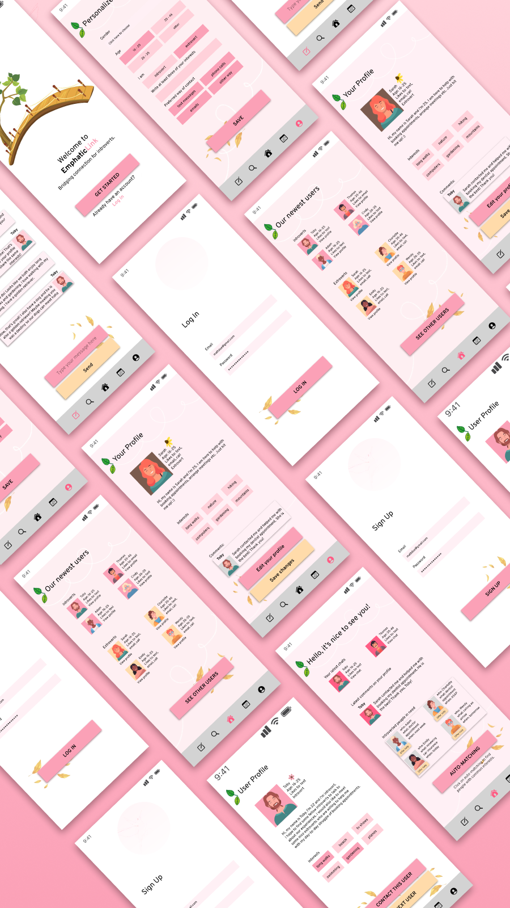
Design process:
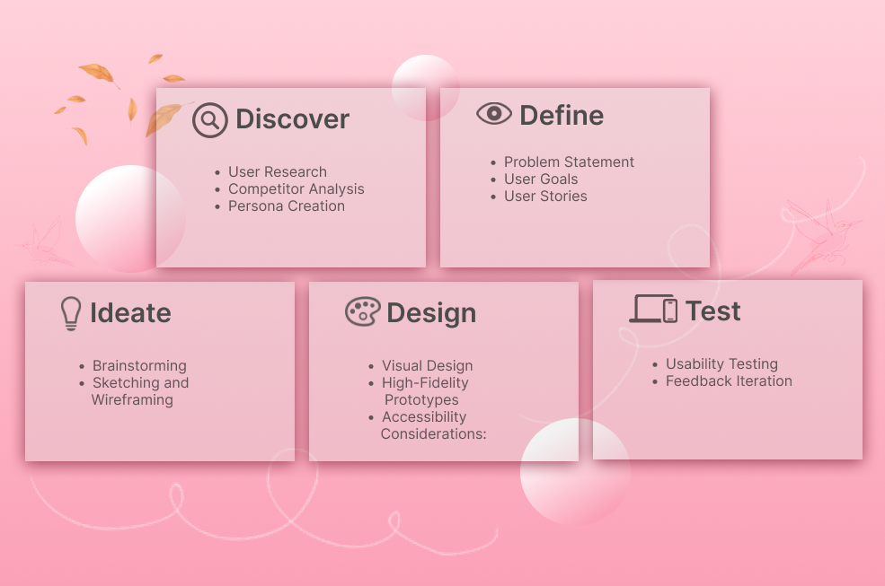
Interview
I have conducted an interview with 4 people. These are the questions I've asked them:
1. What is your age?
2. On a scale of 1 to 5, how would you rate your level of introversion (1 = not introverted, 5 = extremely introverted)?
3. What specific challenges do you face as an introvert when scheduling appointments or social events?
4. How often do you rely on extroverted individuals to help you with scheduling and social interactions?
5. How often do you rely on extroverted individuals to help you with scheduling and social interactions?
6. Do you prefer text messaging, phone calls, email, or other means of communication when arranging appointments or social engagements?
7. Do you prefer text messaging, phone calls, email, or other means of communication when arranging appointments or social engagements?
Survey:
I have conucted a survey with similar questions with 40 people. Here are the results:
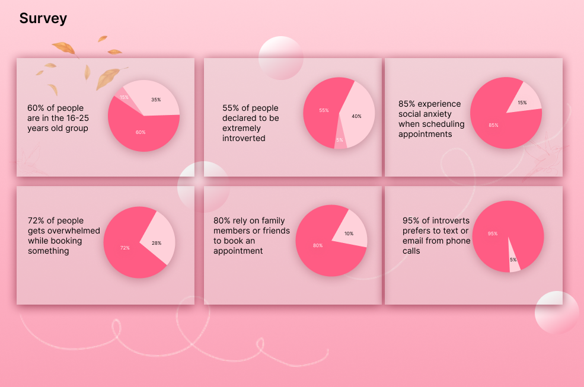
Competitor analysis
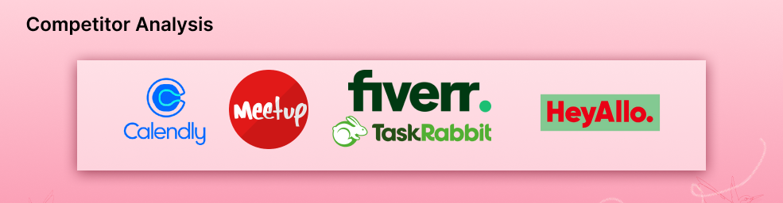
1. Calendly
Strengths:
User-friendly interface for scheduling appointments.
Integrates with popular calendar platforms.
Offers customization options for meeting types and availability.
Weaknesses:
Lacks a specific feature for introvert-extrovert assistance.
Limited in providing emotional support or guidance for introverts.
2. TaskRabbit
Strengths:
Connects users with local service providers for a wide range of tasks, including appointment scheduling.
Allows users to specify their needs and preferences.
Weaknesses:
Focuses on professional services and may not cater to emotional support needs of introverts.
3. Meetup
Strengths:
Facilitates group gatherings and social events.
Allows users to find and join events in their area.
Weaknesses:
Primarily focuses on social events, may not be tailored for appointment scheduling assistance.
4. Fiverr
Strengths:
Provides a platform for hiring freelancers for various tasks, including scheduling assistance.
Offers a wide range of service providers with different skill sets.
Weaknesses:
Lacks a specific feature for introvert-extrovert interaction and support.
5. HeyAllo
Strengths:
Specialized in connecting introverts with extroverts for assistance in various tasks.
Focuses on creating a supportive and understanding environment for introverts.
Offers features like messaging, task management, and appointment reminders.
Weaknesses:
As a newer entrant, it may have a smaller user base compared to established competitors.
Personas
Extrovert
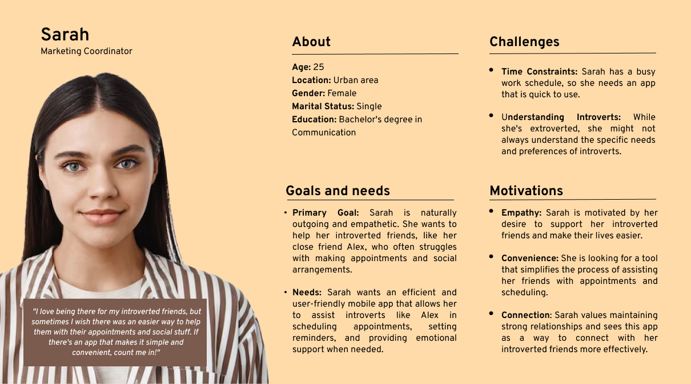
Introvert
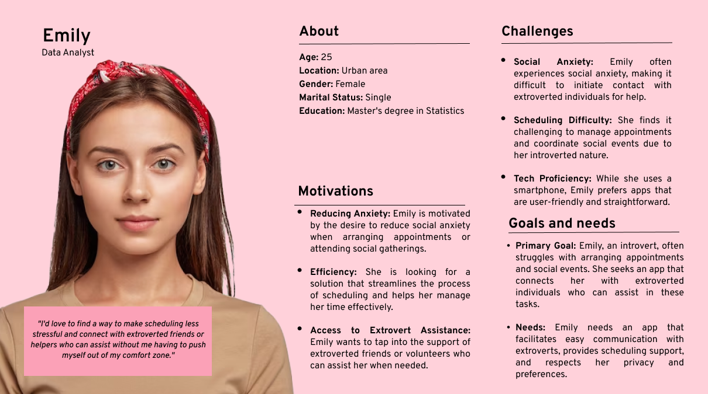
Empathy Map of the introverted persona
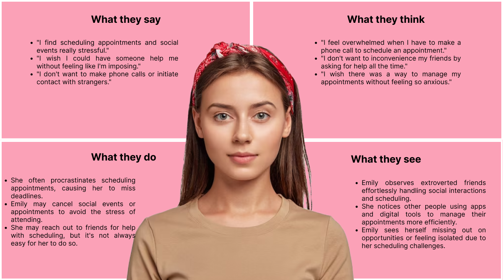
User journey

Task flow
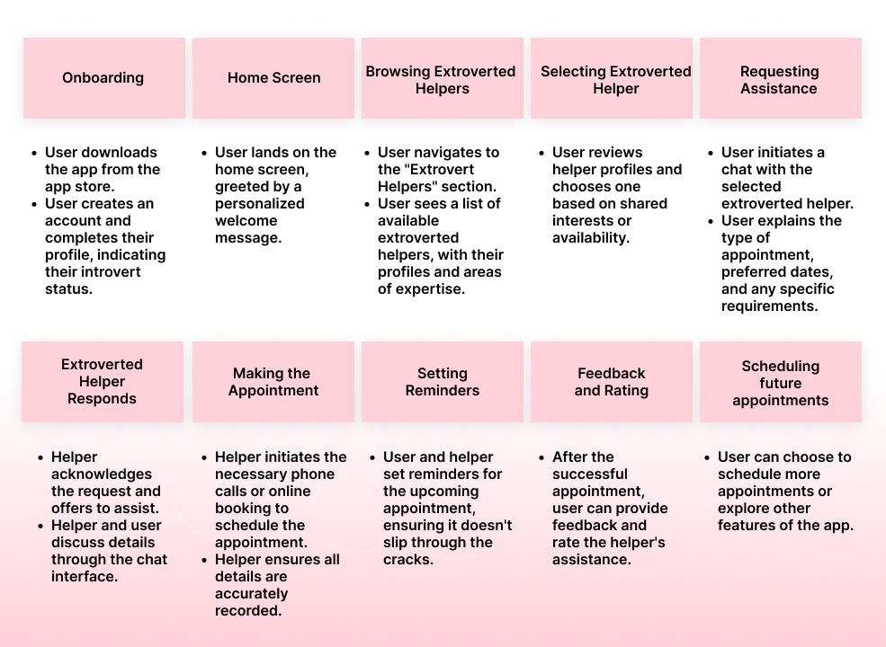
Typography and colors
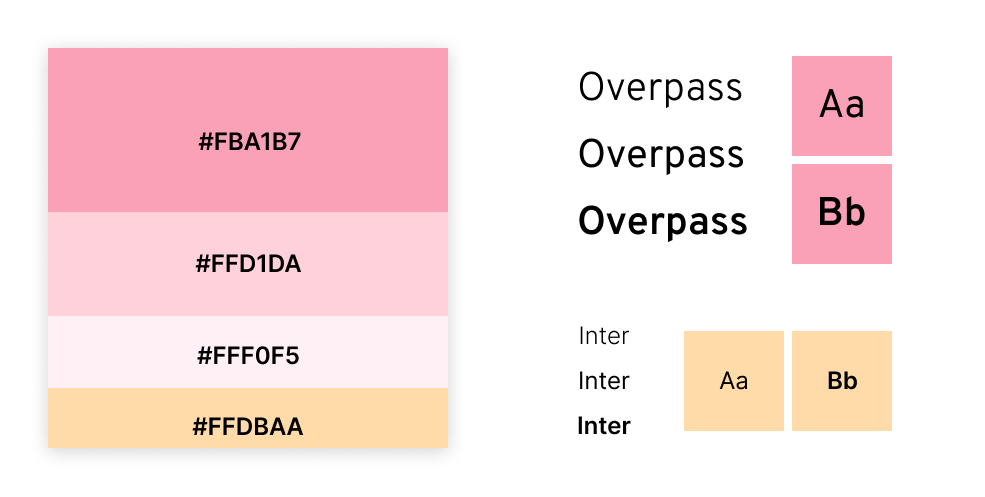
Wireframes
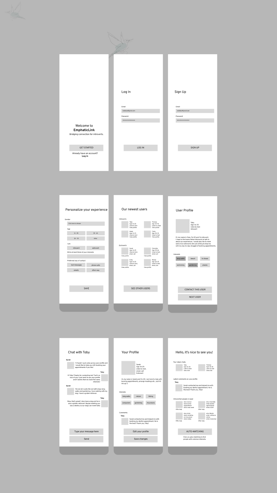
Final screens
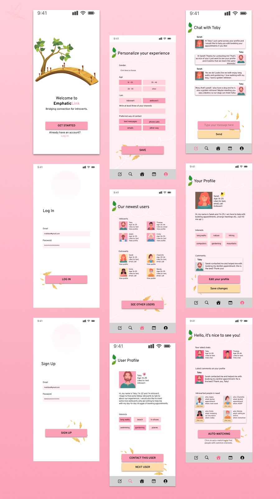
Usability testing
1.Task: Create a new account
2.Find an extroverted helper who shares your interest in [specific interest].
3. Task: Request assistance in scheduling a doctor's appointment for [specific date].
4. Task: As an extroverted helper, assist the introvert in scheduling the doctor's appointment
5.Task: Set a reminder for the upcoming doctor's appointment.
Feedback:
"The account creation process was straightforward and easy to follow."
"The search filters were helpful in narrowing down the list of helpers."
"Initiating a chat for assistance was intuitive and quick."
"The app provided a clear outline of the steps to follow when assisting the introvert."
"The app's notification settings were flexible and suited my preferences."
Final takeaways:
User-Friendly Onboarding:
Participants found the account creation process to be intuitive and user-friendly, allowing them to quickly set up their profiles.
Efficient Helper Selection:
Users were able to efficiently find extroverted helpers based on shared interests, thanks to the effective search and filtering options.
Smooth Assistance Request Process:
Initiating a chat for assistance in scheduling appointments was straightforward, ensuring that introverts can easily communicate their needs.
Clear Guidance for Extroverted Helpers:
For extroverted helpers, the app provided clear steps for assisting introverts in making appointments, contributing to a seamless experience.
Effective Reminder Feature:
Users appreciated the reminder feature, which allowed them to set notifications according to their preferences, reducing the likelihood of missing appointments.
Minor Navigation Issues:
Some participants encountered minor navigation challenges, particularly in transitioning between tasks. These areas may benefit from slight design refinements.